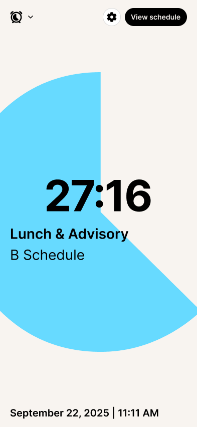
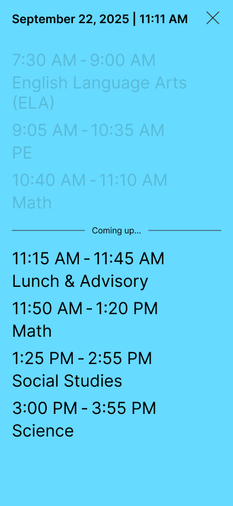

bell.plus
I redesigned the end-to-end experience of bell.plus for students and teachers, based on feedback from people who used the original site. bell.plus is a live timer that counts down to the next bell, so everyone knows how much time is left in class.
01 The goal
Every school has its own bell schedule
Each school runs its own schedule of periods, lunch, and short passing periods between classes. Not every bell applies to every student, either: one might have zero period while another has a free period at the same time.
bell.plus follows each school’s schedule, including passing periods, and lets students make their own when the school’s doesn’t fit.
- 12,000+
- people open bell.plus on a school day
- ~50
- schools use it
With that many people counting on it, their feedback showed where the experience fell short, so we set out to improve it for them and for the schools still to come.
02 Search
Find your school
Search for your school to open its timer. Results show which schedules are verified and when they were last updated. If a school isn’t listed, you can create its schedule or use a personal one.
03 Settings
Customize the timer
Settings open over the timer, so changes show right away. Students can pick a theme, switch to dark mode, rename their classes, and turn on a sound or notification for each period.
04 Personal schedules
Build your own schedule
Students whose bells don’t match the school’s can switch to a personal schedule. Each block gets a name and the days and times it meets.
05 For schools
Set up a school
Anyone, whether staff or a student, can sign in to edit.bell and add their school. They create each schedule, choose which blocks can be renamed, assign schedules to days of the week, and add breaks and holidays. Once it’s saved, they get a link to share with the school.
06 Mobile
Designed for mobile
Students often check the time on their phones between classes, so every screen has a mobile version.



07 What's next
A work in progress
The redesign builds on feedback from people who used the original design. The founder will bring it to bell.plus over time.